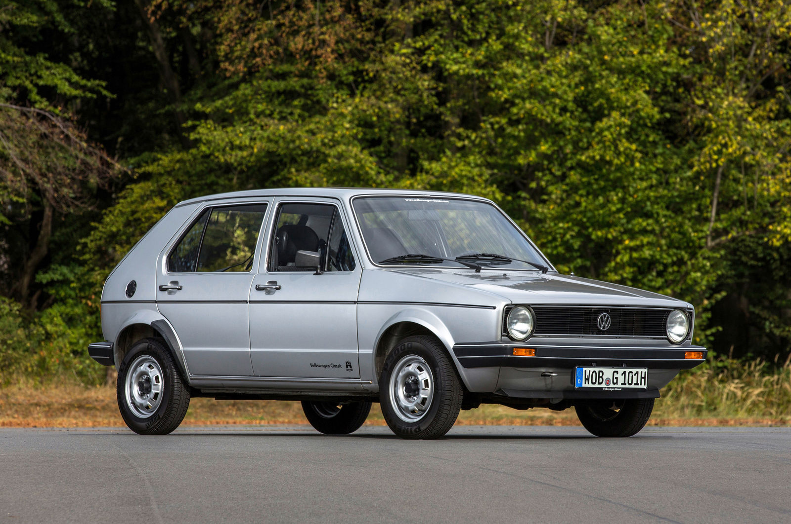

Istoria Volkswagen
O călătorie de aproape un secol – de la visul unei mașini accesibile pentru toți la viziunea mobilității electrice și sustenabile.
1937 – Fondarea Volkswagen
Volkswagen, care înseamnă „mașina poporului”, a fost fondată la 28 mai 1937 în Germania, la inițiativa regimului nazist, cu scopul de a oferi un automobil accesibil clasei muncitoare. Ferdinand Porsche a proiectat modelul inițial – ceea ce va deveni celebrul Volkswagen Beetle. Producția a fost întreruptă de izbucnirea celui de-Al Doilea Război Mondial.
1945–1960 – Renaștere și extindere
După război, fabrica VW a fost salvată de forțele britanice, care au reluat producția Beetle-ului. În 1955, peste un milion de unități fuseseră deja produse. Datorită simplității și fiabilității, Beetle a devenit un simbol al reconstrucției economice germane și unul dintre cele mai vândute modele din lume.
1970–1990 – Diversificare și Golf
Odată cu scăderea cererii pentru Beetle, VW a lansat o serie de noi modele. În 1974, Volkswagen Golf a schimbat radical direcția companiei – design hatchback, tracțiune față și eficiență. A fost un succes masiv. În paralel, VW a preluat Audi și a început consolidarea Grupului Volkswagen.

1990–2010 – Grup global
Volkswagen a devenit o corporație globală, achiziționând mărci precum SEAT, Škoda, Bentley, Lamborghini și Bugatti. A urmat lansarea modelelor Passat, Polo, Touareg și a platformelor comune pentru eficiență. În această perioadă, VW devine unul dintre cei mai mari constructori auto din lume.
2010–2020 – Inovație și provocări
Volkswagen a lansat platforma MQB pentru flexibilitate și digitalizare. În 2015, compania a fost afectată de scandalul diesel (Dieselgate), ceea ce a dus la o repoziționare strategică majoră, concentrată pe electromobilitate. În 2019, VW a lansat ID.3, primul model electric de volum.
2020–prezent – Electromobilitate și sustenabilitate
Volkswagen își asumă un rol de lider în tranziția către mobilitate electrică. Modelele ID.4, ID. Buzz și noile versiuni electrificate ale Golf și Tiguan reflectă ambiția companiei de a deveni neutră din punct de vedere al emisiilor de carbon până în 2050. Inițiativa „Way to Zero” marchează un angajament profund pentru viitorul verde al mobilității.